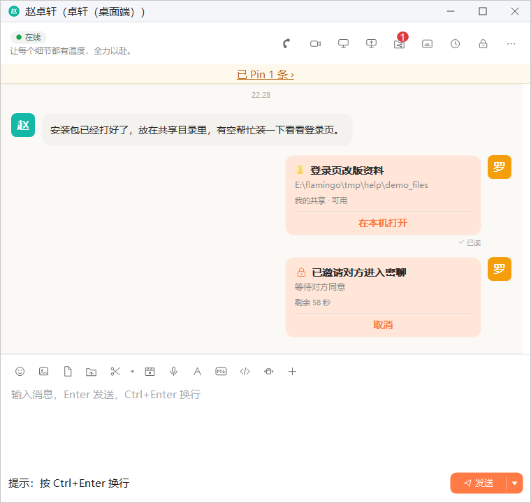
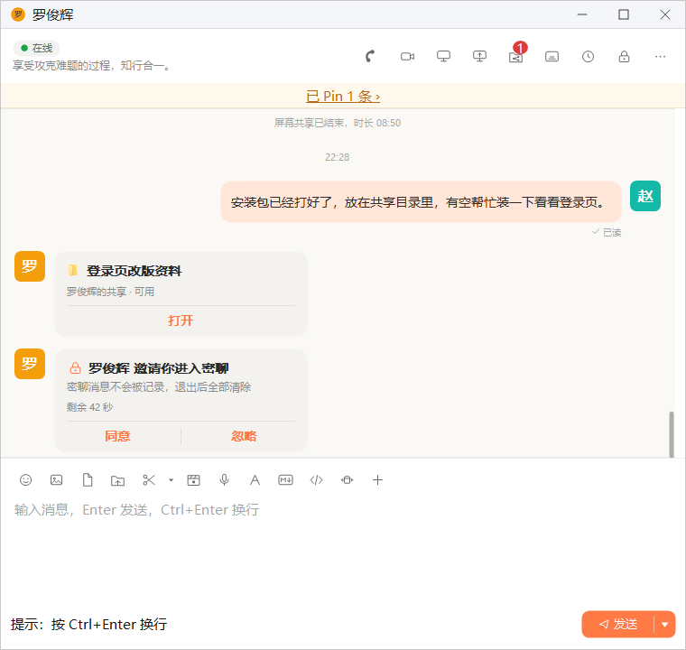
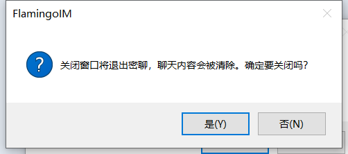

密聊
密聊是一对一的端到端加密聊天：消息只在双方的电脑上解密，不保存在本机聊天记录里，退出后全部清除，窗口还会防止被截图。适合交流不希望留下记录的内容。
- 适用：全体员工，仅限单聊
- 需要：企业开启「单聊密聊」开关；双方都在线
- 入口：单聊窗头部的挂锁按钮
发起密聊
- 打开与对方的单聊窗，点头部右侧的挂锁图标（鼠标停在上面提示 密聊）。
- 聊天里出现一张「已邀请对方进入密聊」卡片，显示「等待对方同意」和剩余秒数。邀请 60 秒内有效，对方回应前可以点卡片上的 取消 撤回。
- 对方同意后，双方的窗口同时进入密聊状态。

1 2- 密聊：发起密聊邀请；企业关闭「单聊密聊」开关时不显示
- 邀请卡片：显示剩余时间，对方回应前可以取消
对方收到的卡片写着「某某 邀请你进入密聊」和「密聊消息不会被记录，退出后全部清除」，下方显示剩余秒数，点 同意 进入密聊，点 忽略 则不进入密聊。超过 60 秒没有回应，邀请失效，发起方看到「对方暂未接受密聊邀请」，接收方看到「密聊邀请已过期」。

无法发起的情况对方不在线、使用的客户端不支持密聊、本企业或对方所在企业没有开启密聊，或者你们之间已有一个未处理的邀请时，发起会失败并给出相应提示。
密聊中
进入密聊后，窗口标题后面加上「（密聊）」，头部下方出现一条密聊提示条，写着「密聊中 · 消息不会被记录，退出后全部清除」，右侧有 安全码 和 退出密聊 两个链接。之后在这个窗口里发出和收到的都是密聊消息，与普通聊天有以下不同：
- 只能发文字、表情和图片：其他类型的消息（文件、语音、代码片段等）会提示「密聊中不能发送这类消息，请先退出密聊」。图片不能超过 10 MB。
- 不留记录：密聊消息只保存在内存里，不写入本机聊天记录，也不会出现在会话列表的消息摘要、托盘的新消息提示和字幕模式里。
- 图片在窗口内查看：点密聊里的图片，会在聊天窗内放大显示，不会打开单独的看图窗口；按 Esc 或点空白处关闭。
- 防截图：密聊窗口开启了防截图保护，截图、录屏或共享屏幕时，密聊窗口显示为空白。
为什么本章没有密聊界面的截图正是因为防截图保护，截图时密聊窗口是空白的，所以本章只能用文字描述密聊中的界面。
防截图的局限密聊能防止本程序与常见截图、录屏软件截取本窗口，但防不住手机拍屏、采集卡或虚拟机宿主截取画面，以及被篡改的客户端。鼠标停在密聊提示条的文字上也能看到这段说明。如果你的电脑系统不支持防截图，发起前会先提示「本机系统无法防止截图，对方会看到这一提示。仍要发起密聊吗？」，对方收到的邀请卡片上也会注明。
核对安全码
点密聊提示条上的 安全码，会显示本次密聊的安全码。请当面或通过电话与对方核对：双方看到的安全码一致，说明密聊没有被第三方截取。
退出密聊
- 点密聊提示条上的 退出密聊，窗口回到普通聊天，密聊内容全部清除，并提示「你已退出密聊，聊天内容已清除」。
- 直接关闭聊天窗也会退出密聊。关闭前会弹出确认框「关闭窗口将退出密聊，聊天内容会被清除。确定要关闭吗？」，点 是 关闭。

对方先退出、对方离线、网络断开或管理员关闭了密聊开关时，密聊随即结束。这时窗口进入「只能查看」状态：提示条说明结束的原因，例如「对方已退出密聊 · 你退出后内容将全部清除」，已有的内容还能查看但不能再发送。提示条上会出现 重新邀请，对方同意后回到密聊，新消息接在原有内容之后；点 退出密聊 则清除内容、回到普通聊天。